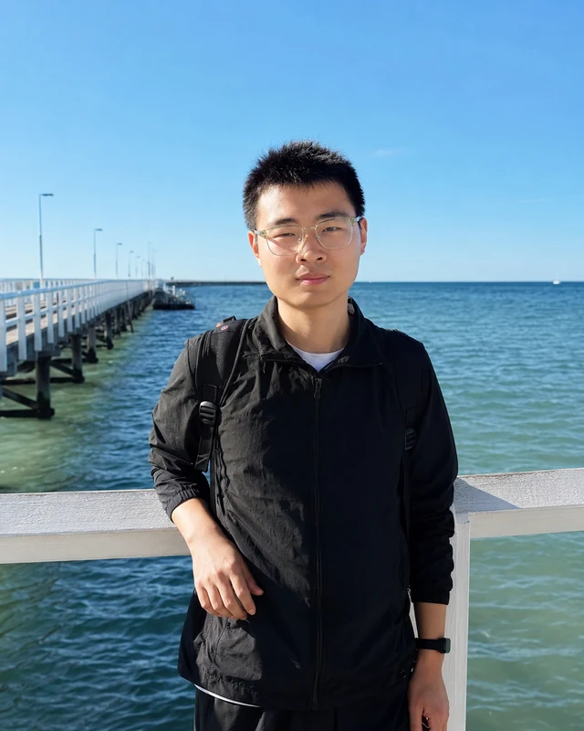

Self-evolving
agent systems
How can agents identify their own errors and improve their memory, reasoning, tool use, and collaboration?
Interests: credit assignment, adaptive collaboration, and verifiable evolution.
PhD student in Artificial Intelligence
I am a PhD student at the Institute of Computing Technology, Chinese Academy of Sciences, and Beijing Zhongguancun Academy. Previously, I studied astronomy at the University of Science and Technology of China.
My research interests include self-evolving agent systems, autonomous scientific discovery, and physics-inspired neural network modeling. My earlier work focused on multimodal learning and time-domain astronomy.
PhD studies in AI — Institute of Computing Technology, CAS & Beijing Zhongguancun Academy
Undergraduate studies in Astronomy — University of Science and Technology of China

How can agents identify their own errors and improve their memory, reasoning, tool use, and collaboration?
Interests: credit assignment, adaptive collaboration, and verifiable evolution.
How can scientific literature, hypothesis generation, simulation, and data validation form a continuous research loop?
Interests: knowledge retrieval, evidence-grounded hypotheses, and scientific agents.
Can low-dimensional neuron states describe complex parameter changes and make learning more efficient?
Interests: geometry-aware adaptation, learning dynamics, and iterative reasoning.
Research projects and open-source contributions across AI and astronomy.
Finding kilonovae through multiple messengers.
A multimodal pipeline that connects gravitational-wave parameters and sky localization with optical light curves to identify kilonova counterparts. Combines time-series encoders, contrastive learning, and cross-modal attention.
View research repositoryOpen-source contributor · Literature retrieval
Contributing to a principles-based scientific discovery system. Developed a general literature retrieval module and participated in discussions of methods and applications.
View projectPlatform development
An agent-first collaboration platform built around OpenClaw, with project discovery, expressions of interest, conversations, and automated setup and health checks.
View projectAGN flare detection
A temporal convolutional network for detecting flares in active galactic nucleus light curves, using ZTF observations, synthetic flares, and Gaussian-process interpolation.
View repositoryKilonova detectability simulations
SNANA-based workflows comparing kilonova detectability across LSST and WFST, from a GW170817A-like event to binary neutron-star populations.
View repositoryYou can find my work and connect with me on GitHub.